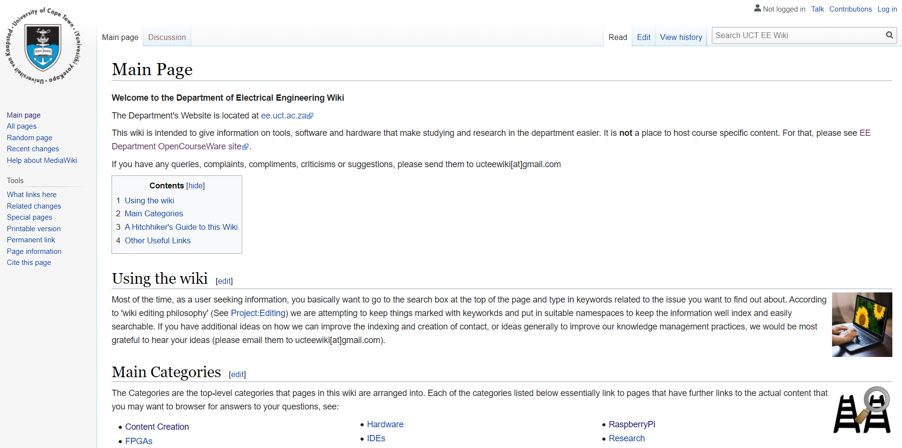
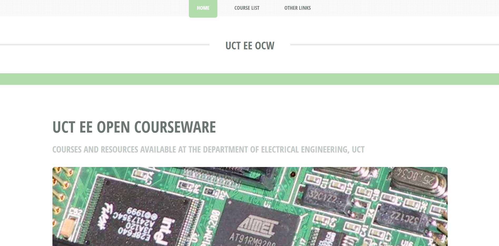

Links

EE Wiki
This wiki is intended to give information on tools, software and hardware that make studying and research in the department easier.

EE OPEN COURSEWARE
This site is for sharing resources for courses in the Electrical Engineering department at the University of Cape Town.
Board Documentation
Reference documentation for the STM32 development boards used in this course. These datasheets and manuals are provided for convenience; the latest versions are always available from STMicroelectronics.
STM32F0 — UCT STM32 Board
The UCT STM32 board is based on the STM32F051 (ARM Cortex-M0).
- STM32F051 Datasheet
- STM32F051 Reference Manual
- STM32F051 Programming Manual
- ARM Cortex-M0 Technical Reference Manual
- ARMv6-M Architecture Reference Manual
STM32F4
STM32 Discovery
A good alternative development platform — particularly the F4 version, which offers stronger processing in a compact form factor with a useful set of onboard components.